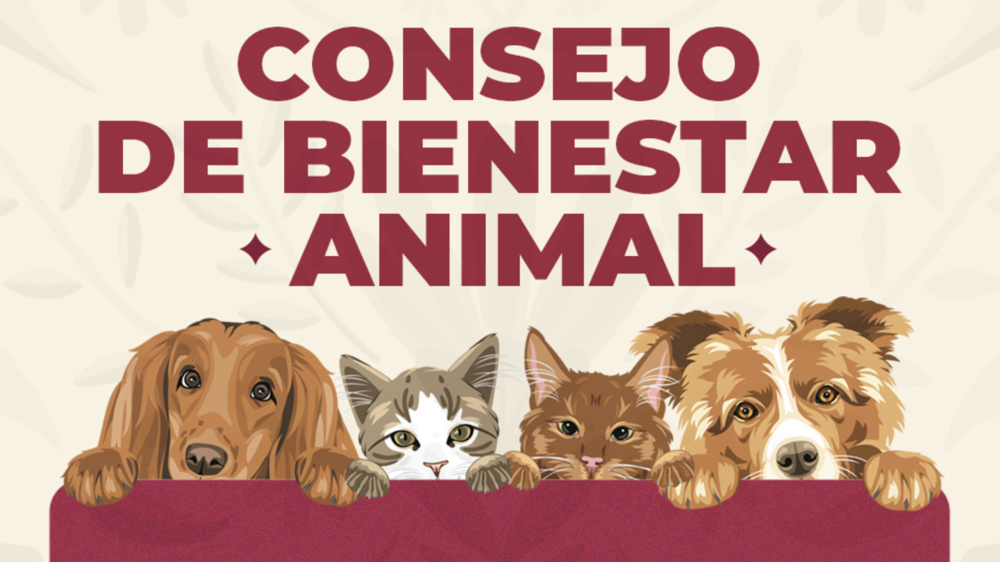

Bienestar Animal
El proyecto PAEC tiene como propósito promover el cuidado, respeto y bienestar de los animales que necesitan ayuda.

Propósito del proyecto
Buscamos crear conciencia sobre la importancia de cuidar a los animales, apoyar su adopción y proporcionarles alimento, protección y un hogar responsable.
¡Adoptar, cuidar y respetar también es una forma de ayudar!